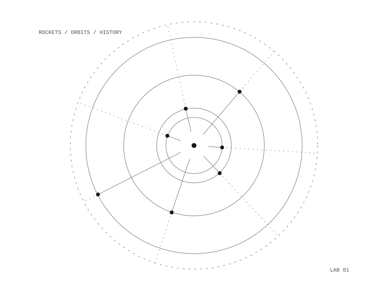

Space Lab
A software-first lab for learning space systems: simulation, mission design, avionics, radio, sensors, data infrastructure for biology, and electric propulsion. It is laid out as numbered module notes, Python notebooks per subject, simulation configurations, avionics tools and a data folder for papers, telemetry and Earth-observation samples. The study path runs from history through delta-v, staging, systems engineering, simulation, avionics, orbital mechanics, spacecraft systems, electric propulsion, radio, sensors and biology.

Rules before hardware
The lab starts with a page of rules: learn through simulation, certified components, legal launches, radio compliance and non-hazardous experiments. Simulation comes first, before any hardware: understanding is checked computationally before physical components are touched. Model rockets use certified kits and motors and fly only at club launches; no motors, propellants or combustion chambers are made. Radio work is receive-only unless licensed, and space biology stays at literature, software and sensor experiments on Earth.
History in four layers
The first module sets the history of spaceflight out as four timelines: myth and desire, war and state power, science and engineering, commerce and infrastructure. It runs from Chinese gunpowder rockets around 900 CE and Jules Verne's cannon to the Moon, through Tsiolkovsky's rocket equation, the V-2 and Sputnik, to reusable boosters and the beginning of a commercial lunar economy. Its study question is how rockets moved from weapons to state infrastructure to commercial platforms.
Delta-v
A glossary defines the rocket equation, Δv = Isp × g₀ × ln(m₀ / mf), and the terms around it, with Δv budgets for common maneuvers and typical specific impulse from cold gas to gridded ion thrusters. It explains why orbit costs 9.4 km/s: at 200 km a craft needs about 7.8 km/s of horizontal speed, falling around the Earth as fast as the surface curves away. A short Python script prints the maneuver budget, the mass ratio each propellant type needs to reach low Earth orbit, a two-stage example, and a rough estimate for one launcher's first stage.
spaceflight history, delta-v, staging, simulation, avionics, orbital mechanics, electric propulsion, radio, sensors, space biology
a four-layer history timeline, a delta-v glossary, a rocket-equation script, a set of safety rules